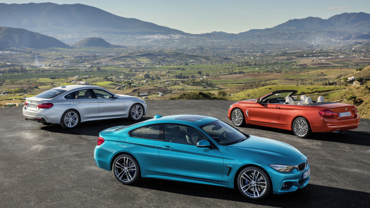
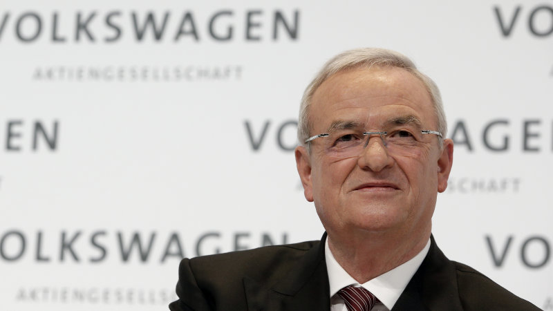
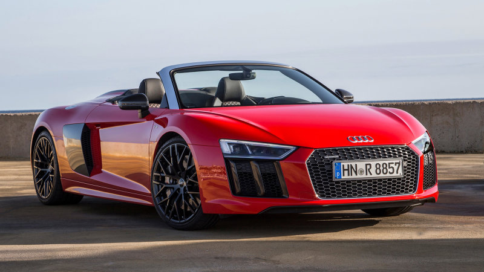

 The BMW 4 Series and M4 coupe, convertible, and Gran Coupe get a major refresh for 2018, but you'd be forgiven for not noticing on first glance. Despite a comprehensive overhaul, this is still the same basic car that debuted in America in 2013. We saw the refreshed global 4 Series last week, but BMW released the details on the US version today.
The 4 Series received an engine overhaul and a pair of new names, 430i and 440i, sometime last year.
This new refresh, with its updated design and retuned suspension, now compliments the underhood overhaul. BMW said part of the refresh's goal was to more clearly separate and show off the differences between the 3 and 4 Series cars. Inside, the infotainment system gets a mild overhaul with a new arrangement for the display. The system offers more driver customization and better integration with the BMW connected app.
Updates for 2018 include new LED lighting front and rear. The headlights are an updated take on BMW's now iconic halo ring lighting. These lights are fitted into new front and rear fascias that are more of an evolution than a full rework. There are new paint colors and new wheel designs available, including an optional wheel that's exclusive to the M4 Competition Package.
The 4 Series was intended to be a sharper and sportier alternative to the standard 3 Series. In that vein, many of the 2018 updates take place underneath. The suspension and steering have been revised, with BMW promising a sharper and slightly stiffer setup. Of course, this new suspension means the updated car should be even more capable than the outgoing model.
The 430i and 440i xDrive go on sale in March, with updated pricing coming closer to launch.
The Los Angeles Times is reporting that Martin Winterkorn, who was VW's CEO before resigning in September 2015 as a result of the diesel scandal, has been named as a suspect in an investigation into whether his knowledge of the cheating constituted fraud.
The report claims that Lower Saxony prosecutors have uncovered evidence that Winterkorn was aware of the emissions cheating earlier than he has claimed.
Back in 2015, Winterkorn was initially named by prosecutors into their investigation into wrongdoing at the company. The prosecutors quickly reversed course and said they were hasty in naming Winterkorn.
Since they've now reversed on their reversal, it seems that German prosecutors feel that they have solid evidence that Winterkorn was complicit in the fraud. Of course, they'll have to prove that in court.
Winterkoren is just one of a total of 37 people that the Times reports the prosecutors are investigating.
VW recently has settled a number of aspects of its diesel cheating scandal, including a $4.3 billion settlement with the US Department of Justice over civil and criminal penalties related to cheating.
Audi just revealed pricing info for the R8 Spyder, which will start at $176,350, about a year after revealing pricing information for the coupe (which starts at $164,150 in base form; the Plus starts at $191,150).
In case you haven't had your coffee yet, like-equipped base cars will span a $12,000 gulf. But the 2017 R8 Spyder costs about the same as the outgoing R8 Spyder V10 equipped with an automatic (which was at the time a very expensive option), so consider that minimal price inflation.
The more interesting comparison is with its platform-mate, the Lamborghini Huracan. A drop-top version of the Italian supercar starts at $267,545 in similar AWD trim with a 5.2-liter V10.
Now, it is true that the Huracan Spyder makes 602 horsepower, a 62 horsepower advantage over the standard R8 Spyder with the same engine (540 hp if you are bad at math).
The Lambo also a tenth faster to 60 mph than the R8 Spyder, at 3.4 seconds. (The '17 R8 Spyder is itself a tenth quicker than its predecessor, so there's that.)
But, the R8 V10 Plus makes 610 hp. We're waiting to hear back form Audi on pricing for that Spyder model. In the coupe, it's a $27,000 increase over the base R8 V10.
That logic would peg an R8 Spyder V10 Plus at around $203,000, or $64k less than the Huracan. In either case, you're paying a lot for Lamborghini's unique styling and tuning, although it's hard to put a price on the specialness of driving a Lamborghini. The Huracan Spyder never for a moment lets you forget you're in something fast and Italian.
That being said, both are legitimate supercars. The R8 Spyder was developed alongside its Italian cousin, and features an appropriately large amount of aluminum and carbon fiber materials in its construction. Of course, like its coupe counterpart, there's no manual available for the new R8 Spyder.
That died with the previous generation. The good news, for fans of open-air driving, is that the roof mechanism only adds 97 lbs to the weight of the car, and Audi kept the electrohydraulics that actuate it as low as possible.
If it's anything like the Coupe to drive, and you can be sure since it's an Audi there won't be much trade-off for the open roof, it'll have a dual personality that will accommodate both daily driving and occasional track use. Sounds like a deal, huh?